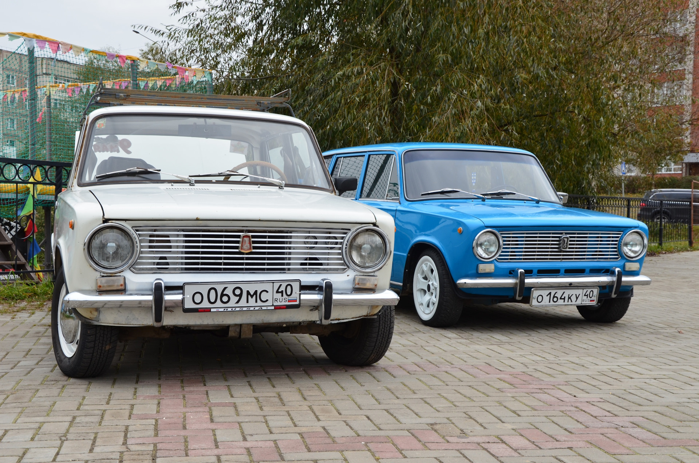
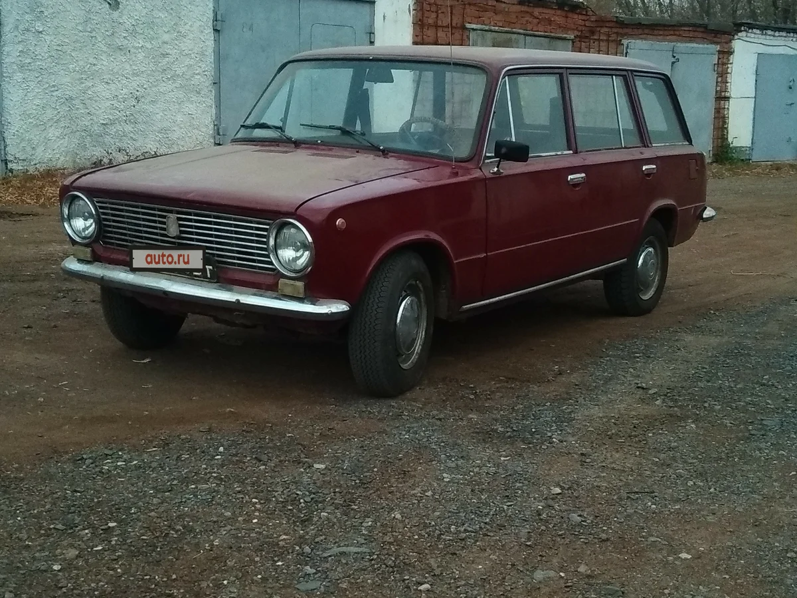
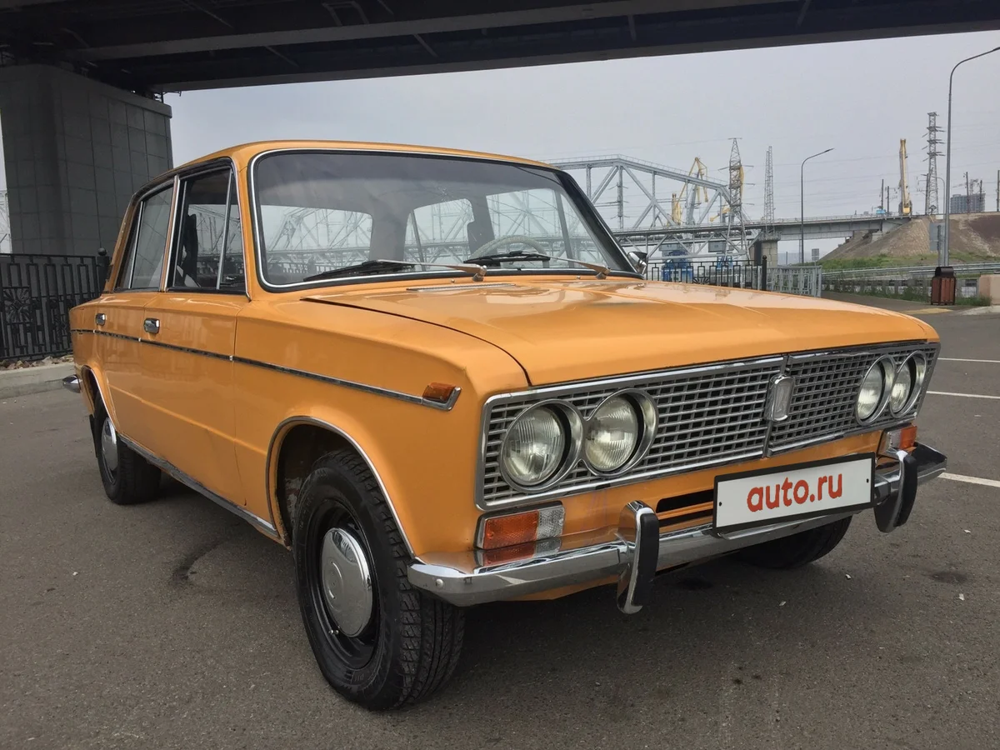

Эволюция ВАЗ
ВАЗ-2101 (1970–1988) — заграничная публика знала модель как LADA-120. Представляет собой четырёхдверный седан.
У своего итальянского собрата «копейка» забрала все внешние черты:
• кубическая форма корпуса (пока ещё с округлыми углами, тогда как следующие модели станут более «рубленными»);
• простой «фасад» с прямоугольной радиаторной решёткой и круглой парой фар;
• высокая линия крыши;
• скруглённые арки колёс;
• лаконичный «тыл» с вертикально ориентированными фонарями и небольшой крышкой багажника.

Прототипом для первого ВАЗА стал Fiat 124 (причём вполне легально, так как между владельцем итальянского концерна и советским Внешторгом было подписано соглашение)
ВАЗ-2102 (1971–1986) — пятидверный универсал получился просторным.
Помимо изменившегося типа кузова, «двойку» отличает от «копейки» номерной знак, расположившийся на пятой двери и вертикальные задние фонари.

Багажник ВАЗ-2102 мог вместить много поклажи (поэтому автомобиль был мечтой каждого советского дачника, рыбака, охотника и туриста)
ВАЗ-2103 (1972–1984) — третья модель Жигулей (Lada 1500 в экспортном варианте) была спущена с конвейера в том же году, что и «двойка».
От ВАЗ-2102 «трёшку» отличить можно без труда, так как у них разный тип кузова.
А вот от предыдущего седана («копейки») ВАЗ-2103 поможет выделить крупная радиаторная решётка с «сидящими» прямо на ней сдвоенными фарами.

За 12 лет было выпущено 1 304 899 таких Жигулей «трёшек»
ВАЗ-2104 (1984–2012) — универсал, известный на Западе как Kalinka. Главное отличие от предшественников — не круглые, а прямоугольные передние фары.
Линии корпуса более рубленные (закругления на углах стали менее выраженными, чем, например, у «копейки»).
Эта пятидверная машина демонстрирует классический «жигулёвский» дизайн; ВАЗ-2106 больше, чем у «двойка» — он выше на 42 см, а багажное отделение длинне на 112 см
Если ВАЗ-2104 — первый отечественный универсал с прямоугольными передними фарами, то ВАЗ-2105 — первый седан с подобной формой оптики.
Кузов «пятёрки» выделяется большей угловатостью.
Сбоку разместились крылья с резанными обводами. Крыша не имеет ни намёка на скругления, капот и багажное отделение длиннее, чем у «копейки» или «тройки».
Экспортные авто имели название LADA-2105 Clasico, у советского автолюбителя машина получила кличку «табуретка»; «пятёрка» нравилась советским гражданам,
не хотевшим покупать универсал,
но желавшим иметь авто с вместительным багажником
ВАЗ-2106 (1976–2006) — в народе прозван «жигулями-шестёркой», для иностранного покупателя использовалось название Lada 1600 — заднеприводный четырёхдверный седан.
Особенность ВАЗ-2106 — круглая пара передних фар, «посаженная» не на радиаторную решётку, а в чёрные пластиковые прямоугольники.
ВАЗ-2106 стал самым покупаемым авто семидесятых и восьмидесятых годов в СССР (всего было произведено и продано свыше 4,3 млн «шестёрок»,
тогда как «троек» выпустили 1,3 млн экземпляров, а «пятёрок» — 1,8 млн)
ВАЗ-2107 (1982–2012) сделали в соответствии с автомобильными трендами восьмидесятых годов. Тогда были модны угловатые, даже немного грубые формы,
обилие хромированных деталей, выпирающие детали
(вроде радиаторной решётки, которая стала выступать от уровня капота).
Как и у ВАЗ-2106 фары посажены в пластиковые прямоугольники (разница в том, что у «шестёрки» передняя оптика круглая, а у «семёрки» она прямоугольная).
Американский автомобильный журналист Джереми Кларксон, делая обзор на ВАЗ-2107, назвал авто «машиной для грубых мужчин, не терпящих ничего женского»
ОКА (1987—2008)
ВАЗ-111 (Лада Ока) — российский автомобиль сверхмалого класса. С конвейера было спущено порядка 700 тыс. моделей.
По типу кузова это трёхдверный хэтчбек.
В стремлении уменьшить размеры машины разработчики пожертвовали гармоничностью облика, из-за чего в народе Оку прозвали «чебурашкой».
Характерные особенности внешнего вида:
• миниатюрный кузов;
• угловатые линии;
• прямоугольная оптика;
• бампер из неокрашенного пластика;
• укороченные свесы;
• короткие колёсные арки;
• слишком тонкие стойки крыши;
• солидная площадь остекления.
Ока в длину вытянута на 3200 мм, в ширину — на 1420 мм, в высоту — на 1400 мм.
На верх
Далее